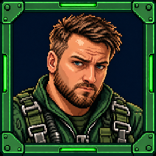

Four full head-to-boots frames. The face was rebuilt from your approved portrait, with a fuller beard and jaw, normal-sized eyes and restrained expressions. The likeness is ready for your review.

The existing approved portrait stays in the HUD and talking portrait bank.
Click it to inspect your original likeness reference sheet.
The complete body frames below are 512 × 1024, with one shared scale and anchor.